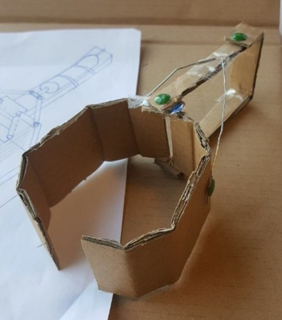

Sjoelschijfschieter
Opdrachtgever
RobertsEngineering -- een ontwikkelstudio die zich richt op inclusieve technologische oplossingen voor mensen met een fysieke beperking.
Situatie
Sjoelen is een klassiek en sociaal spel dat mensen samenbrengt. Helaas kunnen sommige mensen met een fysieke beperking dit spel niet zelfstandig spelen. Een meisje van 8 jaar met een beperking wil dolgraag weer samen met haar vriendinnen sjoelen. Haar armbeweging is beperkt, waardoor ze zelf geen schijven over de baan kan schuiven.
RobertsEngineering wil een oplossing ontwikkelen die haar in staat stelt om toch op een leuke en zelfstandige manier mee te doen aan het spel. De oplossing moet eenvoudig te bedienen zijn en geschikt zijn voor gebruik in gezelschap.
Opdracht
Ontwerp en bouw een werkend prototype van een sjoelschijfschieter die werkt op een powerbank en waarmee een gebruiker met beperkte armfunctie zelfstandig kan sjoelen.
De schieter moet automatisch sjoelstenen kunnen laden, richten, en schieten, met bediening via één knop of een optionele lichte joystick.
De installatie moet los op verschillende sjoelbakken geplaatst kunnen worden, zonder permanente bevestiging.
Programma van Eisen (PvE)
Voor het ontwerp van een sjoelschijfschieter die een meisje van 8 met een beperking in staat stelt om zelfstandig te sjoelen met haar vriendinnen.
Algemene eisen
-
De sjoelschijfschieter werkt op een powerbank (5V via USB).
-
Het apparaat is los te plaatsen op een sjoelbak, en hoeft dus niet permanent bevestigd te worden.
-
De schieter is stabiel tijdens gebruik, ook zonder vastzetten.
-
Indien wél bevestigd, gebeurt dit op eenvoudige en gebruiksvriendelijke manier (bijv. zuignappen, klemmen of magneten).
-
Het apparaat mag maximaal 10 cm uitsteken buiten de sjoelbak aan beide zijkanten.
Functionaliteit: laden, richten, schieten
-
De gebruiker hoeft geen schijven handmatig te plaatsen of te schuiven -- het laden gebeurt automatisch of semi-automatisch.
-
De richting van de schietrichting kan beïnvloed worden door de gebruiker.
-
De schijf wordt automatisch afgeschoten, zonder dat de gebruiker veel kracht hoeft te zetten.
-
De precieze technische invulling van laden, richten en schieten is vrij voor interpretatie, zolang het systeem goed werkt en eenvoudig te bedienen is.
Bediening
-
De bediening is geschikt voor een kind van 8 met beperkte armfunctie.
-
De standaardbediening bestaat uit één knop:
-
Bij het indrukken start de richtbeweging (bijv. links/rechts).
-
Bij het loslaten of opnieuw indrukken wordt de richting vastgezet en wordt de steen afgeschoten.
-
Bij bediening via knop is een hoorbare klik of geluid te horen als terugkoppeling.
-
Alternatieve bediening is toegestaan, mits goed onderbouwd en getest op bruikbaarheid.
Projectmethode
Bij dit project draait alles om het ontwerpen van een technisch hulpmiddel dat een echte impact heeft: een sjoelschijfschieter waarmee een meisje van 8 zelfstandig kan meedoen met een spelletje sjoelen. Dat vraagt om slimme ideeën, gebruiksvriendelijkheid én goed testen. De volgende stappen helpen jullie om gestructureerd en creatief te werk te gaan.
Wk1 - Stap 1 -- Verken de opdracht en de gebruiker
Verdiep je in de situatie en de wensen van de gebruiker. Lees de opdracht goed door en bespreek met je team wat de uitdaging is.
-
Analyseer de situatie en de PvE.
-
Breng de gebruiker in beeld: wat kan ze wel, wat niet?
Wk1 - Stap 2 -- Ideeëntabel: verken mogelijke oplossingen
Voordat je begint met bouwen of tekenen, denk je na over verschillende manieren waarop je de belangrijkste functies van de sjoelschijfschieter kunt uitvoeren. Door ideeën te vergelijken zie je wat de slimste, meest haalbare of meest gebruiksvriendelijke aanpak is.
Maak een ideeëntabel (ook wel morphologisch schema genoemd) waarin je voor de volgende onderdelen meerdere technische oplossingen bedenkt: Laden van de sjoelsteen, Richten, Schieten, Bevestiging en plaatsing,

Figuur 1: Voorbeeld van een spuugmodel
Wk2 - Stap 3 -- Maak een keuze uit je ideeën
Na het invullen van de ideeëntabel kies je per functie een oplossing die past bij jullie doel, gebruiker en middelen. Licht kort toe waarom je voor deze optie kiest. Je mag ideeën combineren. Soms is de "beste" oplossing nog niet meteen maakbaar -- kies dan een versie die je snel kunt testen. Later bijstellen mag altijd als blijkt dat iets toch niet goed werkt.
Wk3 - Stap 4 -- Snel eerste ideeën en prototype
Je hebt een richting gekozen---nu snel testen! Maak een simpele proefopstelling van (een deel van) je idee met karton, LEGO of andere materialen. Gebruik eventueel een Arduino. Test vroeg, met echte sjoelstenen, en focus op één functie tegelijk. Schrijf op wat werkt en wat niet, en pas je ontwerp aan als dat nodig is.

Wk4 - Stap 5 -- Ontwerp uitwerken in 3D (Fusion 360)
Nu je weet wat werkt (of wat beter moet), ga je het ontwerp verder uitwerken in een 3D-model in Fusion. Teken de belangrijkste onderdelen, bepaal de juiste afmetingen en houd rekening met wat je al getest hebt. Zorg dat je weet hoe onderdelen in elkaar passen en hoe je het gaat maken (bijv. 3D-printen of lasersnijden).
Aandachtspunten
- Denk aan hoe het apparaat in elkaar gezet moet worden (bijv. schroeven, klikverbindingen).
- Zorg voor ruimte voor elektronica zoals een Arduino, batterij, knop of joystick.
- Controleer of alles wat je ontwerpt ook maakbaar is met de beschikbare materialen en machines.
- Houd rekening met de 10 cm-regel: je ontwerp mag maximaal 10 cm buiten de sjoelbak uitsteken aan beide zijkanten.
Wk5/6/7 - Stap 6 -- Prototype bouwen, testen en verbeteren
Nu je ontwerp klaar is, bouw je een werkend prototype. Verzamel of maak de onderdelen, zet alles in elkaar en test of laden, richten, schieten en bediening goed werken. Test steeds kleine onderdelen apart én samen in het geheel. Test met echte sjoelstenen en pas aan waar nodig. Noteer wat beter kan en verbeter je ontwerp. Zorg dat het apparaat stevig, veilig en bruikbaar is. Documenteer je aanpassingen en bereid je voor op de eindpresentatie.
Wk8 - Stap 7 -- Voorbereiden eindpresentatie en oplevering
Maak een korte presentatie waarin je het probleem, proces en resultaat uitlegt. Laat zien wat jullie ontworpen hebben, hoe het werkt en waarom jullie bepaalde keuzes maakten. Demonstreer het prototype en lever een duidelijke rapportage in. Vertel ook wat niet werkte en hoe je dat hebt opgelost, en presenteer het zo dat iedereen het begrijpt.
Projectplanning
| Week | Les 1 | Les 2 |
|---|---|---|
| 1 | Introductie project + opdracht verkennen | PvE doornemen + gebruiker en functies analyseren / Ideeëntabel maken |
| 2 | Ideeëntabel maken | Keuzes maken uit ideeën + plan van aanpak opstellen |
| 3 | Eerste prototype of testopstelling bouwen | Testen en verbeteren (laden, richten of schieten) |
| 4 | Verder testen + keuze voor oplossing | Start 3D-ontwerp in Fusion 360 / 3D-ontwerp in Fusion 360 |
| 5 | Ontwerp afronden in Fusion 360 | Onderdelen printen/snijden en verzamelen |
| 6 | Prototype bouwen | Prototype testen en aanpassen |
| 7 | Verbeteringen uitvoeren | Eindprototype afmaken en testen |
| 8 | Eindprototype afmaken en testen | Eindpresentatie voorbereiden / Eindpresentatie + oplevering |
Beoordelingsrubric
| Beoordelingsaspect | 1 – Onvoldoende | 2 – Matig | 3 – Voldoende | 4 – Goed | 5 – Uitstekend |
|---|---|---|---|---|---|
| Begrip van de opdracht | Opdracht is nauwelijks begrepen of verkeerd geïnterpreteerd. | Beperkt begrip van gebruiker en situatie. | Opdracht is redelijk begrepen, gebruiker is herkenbaar. | Goed inzicht in doel en gebruiker, keuzes passen daarbij. | Uitstekend inzicht, hele ontwerp sluit aan bij behoeften van de gebruiker. |
| Ideeontwikkeling | Nauwelijks ideeën of erg eenzijdig. | Enkele ideeën bedacht, maar weinig variatie of onderbouwing. | Meerdere werkbare ideeën, deels onderbouwd. | Creatieve en haalbare ideeën, goed doordacht. | Zeer breed en origineel ideespectrum, met sterke onderbouwing. |
| Prototyping en testen | Geen bruikbaar prototype of geen test gedaan. | Eenvoudig prototype, nauwelijks getest. | Werkend prototype, getest en beperkt aangepast. | Meerdere testmomenten en duidelijke verbeteringen. | Zorgvuldige testcyclus, met doordachte verbeteringen op basis van testen. |
| 3D-ontwerp (Fusion 360) | Geen of slecht passend ontwerp. | Onvolledig of weinig bruikbaar ontwerp. | Passend ontwerp, functioneel maar basaal. | Functioneel, nauwkeurig en goed uitvoerbaar ontwerp. | Zeer doordacht ontwerp, technisch sterk en maakbaar uitgewerkt. |
| Functioneren van eindproduct | Product werkt niet of nauwelijks. | Product voert enkele functies uit, beperkt bruikbaar. | Product werkt grotendeels, bruikbaar met beperkingen. | Product werkt goed en voldoet aan PvE. | Product werkt uitstekend, gebruiksvriendelijk en goed getest. |
| Samenwerking en planning | Nauwelijks samenwerking, veel onduidelijkheid. | Enigszins samengewerkt, taakverdeling onduidelijk. | Samenwerking was voldoende, planning deels gevolgd. | Goed samengewerkt, duidelijke taakverdeling en planning. | Uitstekende samenwerking, zelfstandig en gestructureerd gewerkt. |
| Presentatie en verantwoording | Slordige of onvolledige presentatie, zonder uitleg. | Beperkte uitleg van keuzes, presentatie is onduidelijk. | Duidelijke presentatie, keuzes worden redelijk onderbouwd. | Verzorgde presentatie met heldere onderbouwing van ontwerpkeuzes. | Sterke presentatie, goed opgebouwd, overtuigend met inzicht in proces en keuzes. |
Beroep: Mechatronisch ingenieur
Ben jij iemand die graag dingen ontwerpt, bouwt én laat bewegen? Dan is mechatronisch ingenieur misschien wel jouw droombaan!
Als mechatronisch ingenieur combineer je mechanica, elektronica en programmeren om slimme apparaten te maken. Denk aan robots, sorteermachines, drones, automatische deuren of medische hulpmiddelen zoals een elektrische rolstoel of... een sjoelschijfschieter! Jij bedenkt hoe iets beweegt, hoe het bestuurd wordt, en hoe het allemaal samenwerkt.
💡 Wat je doet als mechatronisch ingenieur:
-
Ontwerpen van slimme apparaten of systemen
-
Werken met motoren, sensoren, schakelingen en microcontrollers (zoals Arduino)
-
Dingen bouwen én testen: werkt het echt zoals je bedacht had?
-
Samenwerken met andere ontwerpers, programmeurs en technici
🎯 Waarom dit beroep bij jou kan passen:
-
Je houdt van techniek én creativiteit combineren
-
Je wilt iets maken dat écht werkt en mensen helpt
-
Je vindt het leuk om te puzzelen met onderdelen, kabels en code
🛠️ In dit project ben jij eigenlijk al een mini-mechatronisch ingenieur. Je denkt na over beweging, maakt een systeem dat iets automatisch doet én gebruikt elektronica. Wie weet waar dat toe leidt!